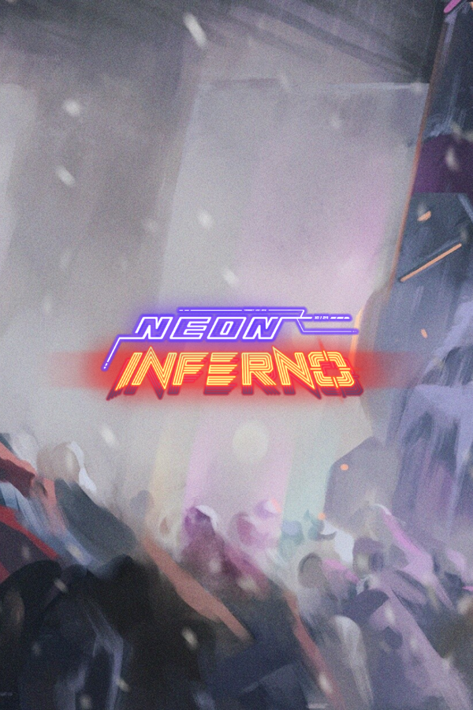

Neon Inferno
Every archived year-end list appearance, including placement and points earned.
About the Game
NEON INFERNO is a hybrid side-scroller and gallery-shooter where the action takes place in both the foreground and the background. As warring factions battle for control of a dystopian New York City, you enter the fray as an assassin for the Family -- a notorious crime syndicate determined to eliminate its rivals and dominate the metropolitan battlefield. Rendered in beautiful pixel art and backed by an evocative soundtrack, Neon Inferno delivers a stylish, modern 2D action experience with cyberpunk flair.SELECT YOUR KILLERTake control of Angelo Morano or Mariana Vitti and battle through the streets, blasting, deflecting, and slicing your way through your enemies! With multiple upgrades and weapon options to choose from, you'll be well-equipped to shift this city-wide conflict in your favor.SHOOT CLOSE, AIM FARAlong with traditional run-and-gun action, you'll be able to attack your enemies in both the foreground and the background, deflect their projectiles back at them using "Bullet Time", and commandeer vehicles to chase down your targets! Choose your level of difficulty or challenge yourself in the 1-credit-clear Arcade Mode!A JOINT OPERATIONGrab a friend and expand The Family's reign across the city together! With double the characters and double the firepower, there's no limit to the carnage you can cause!TARGETS ACQUIREDGo up against a rogue's gallery of unruly bosses, one at the end of every mission. Each boss is totally unique, featuring many attacks and multiple phases that will truly put your skills to the test!
| Released | 2025-11-19 |
|---|---|
| Developer | Zenovia Interactive |
| Publisher | Retroware |
| Genres | Action, Shooter, Arcade |
| Platforms | Xbox One, Nintendo Switch, Xbox Series S/X, PC, PlayStation 5, PlayStation 4 |
SingleplayerSteam AchievementsMultiplayerFull controller supportSteam CloudCo-opcooperative2DFemale ProtagonistSplit ScreenLocal Co-OpPixel Graphics
Where to Buy
Game information provided by RAWG.
Points by Year
List History
| Year | Source | List | Placement | Points |
|---|---|---|---|---|
| 2025 | WayTooManyGames | Top 20 Best Games of 2025 | 20 | 3 |